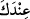
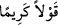

münâsebetleri bulunmaktadır. Sana ulaşması bakımından Allah Teâlâ’nın var etme,
rubûbiyyet, rahmet ve şefkat gibi sıfatlarının eserlerinin zâhir olduğu ilk mazhar
onlardır. Bununla birlikte anne-baba kendi haklarının yerine getirilmesine muhtaçtırlar.
Allah ise bundan müstağnîdir.
Tevhidden sonra farzların en önemlisi anne-babaya iyilikte bulunmaktır. Bir hadiste:
“Anne-babaya iyilik; namaz, oruç, hac, umre ve Allah yolunda cihaddan daha
fazîletlidir”[64] buyrulmuştur. Bu rivâyeti Fahreddin Râzî zikretmiştir.
“Onlardan biri veya her ikisi senin yanında yaşlanırsa,” yâni onlar ihtiyarlığa
ulaşırlar ve senin hizmetine muhtaç olurlarsa…
“Senin yanında” ifâdesinin mânâsı, ‘senin himayende ve korumanda’ demektir. Âyetin
başında çoğul siygası kullanıldığı halde “ Indeke” = senin yanında” ifâdesinde ve
daha sonra müfred (tekil) ifâdelerin kullanılması, maksadın karıştırılmasını engellemek
içindir. Çünkü asıl maksad herkesi anne-babasına öf demekten ve onları azarlamaktan
nehyetmektir. Şâyet çoğul olanlara göre çoğul, tesniye olanlara göre de tesniye zamiri
gelseydi bu mânâ hâsıl olmazdı.
el-Es’iletü’l-mukhime’de şöyle der: “Allah Teâlâ anne-babaya iyilik ve ihsanda
bulunmayı niçin özellikle onlar yaşlandıkları zaman vâcib kılmıştır? Halbuki anne-
babaya ihsanda bulunmak mutlak olarak vâciptir.” denilirse, bunun cevabı şudur: Çünkü
genellikle anne-babanın muhtaç olduğu vakit yaşlılık zamanlarıdır. Muhtaç olmadıkları
zaman onların isteklerini yerine getirmek mendûb, muhtaç oldukları zaman ise farzdır.”
“Kendilerine” gerek yalnız olduklarında gerekse bir topluluk içinde iken “Öf!” bile
deme;” “öf” sıkıntıyı gösteren bir sestir. “Sıkılmak” anlamında isim fiildir. Yâni anne
ve babandan tiksinerek ve onlara bakmayı ağır bularak öf deme, canını sıkma,
sinirlenme. “Öf” kelimesi, her türlü eziyet ve sıkıntı için kullanılır. Fakat burada
önemine binâen eziyetin bir kısmı zikredilmiş ve şöyle buyrulmuştur: Onlardan
hoşlanmadığın bir şey gördüğün zaman kaba söz söyleyip “onları azarlama; ikisine de
güzel söz söyle.” “ Kavlen kerîmen”, güzel ahlâkın gerektirdiği ve şahsî
olgunluğa yakışan güzel ve hoş söz demektir. “Ey babacığım, ey anneciğim!” gibi sözler
söylemektir. Nitekim İbrâhim (a.s.)’ın âdeti böyledir. O, babasının küfür içinde
olduğunu bildiği halde ona “Babacığım” demiş, anne-babasını isimleriyle
çağırmamıştır. Çünkü anne-babayı isimleriyle çağırmak bir eziyet ve cefa, kötü edeb ve
çirkin çağırıştır. Ancak bazılarının dediği gibi onlar olmadığı zaman gıyablarında
isimleriyle anılabilirler.
İnsan, sesini anne-babasının sesinden fazla yükseltmez, onlarla yüksek sesle
konuşmaz. Aksine fısıltıyla ve alçak sesle konuşur. Sağır olmaları hâlinde ve bir husûsu
daha iyi anlatmak gibi zaruret hâsıl olduğunda yüksek sesle konuşabilir. Kişi bir başka
kimsenin anne-babasına da sövmez. Çünkü sövdüğü kişi de onun anne-babasına söver.
Anne-babasına öfkeyle de bakmaz.